计算机视觉 · 第 4 章 特征检测与匹配
4.3 尺度不变特征：LoG 与 DoG
上一节留下一个缺口：Harris 的检测窗口是固定大小的，图像一放大，原来的角点就变成了边缘。这一节解决它。课件的思路不是去改窗口的形状，而是给「窗口该多大」找一个依据——把窗口内的「内容」写成窗口尺度的函数，谁的窗口尺度能让内容取到极值，就用那个尺度去看。由此引出两个算子：高斯拉普拉斯算子（LoG）与它的高效近似高斯差分算子（DoG）。这两个算子既是尺度不变检测的核心，也是后面 SIFT 的骨架。
1. 问题的提出：让检测窗口自己会「缩放」
课件先把问题问清楚——如何检测具有尺度不变性的特征点？给出的思路是：需要找到一种方法，让检测窗口可以对同一张图像的尺度变化作出响应，也进行尺度上的改变，从而可以在尺度变换后的同一张图像上识别到同一个目标。
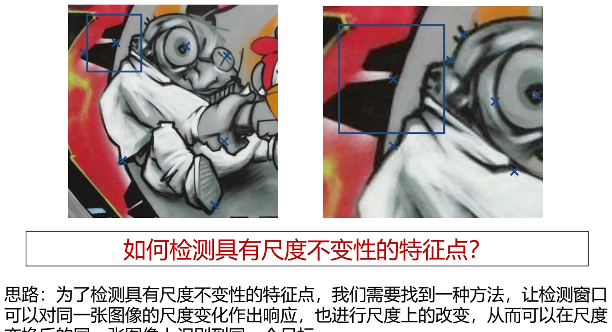
这句话里藏着本节最关键的一对概念，课件把它单列成一页：
- 「变」的东西：一张图像（或者说图像上的检测对象）的尺度；
- 「不变」的东西：一个相对区域内的内容；
- 目标：寻求一个合理的检测窗口的绝对尺度，以迎合内容的相对不变。
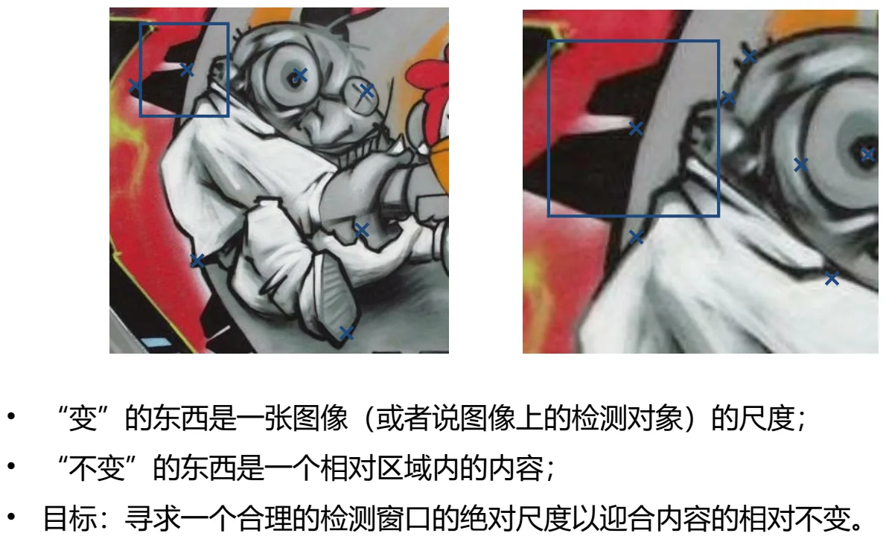
这就是问题建模的第一步：把检测窗口内的「内容」作为一个函数，把检测窗口的「尺度」作为自变量。换个说法——不要问「这个像素是不是角点」，而要问「用多大的窗口去看，这块内容才最像一个特征」。
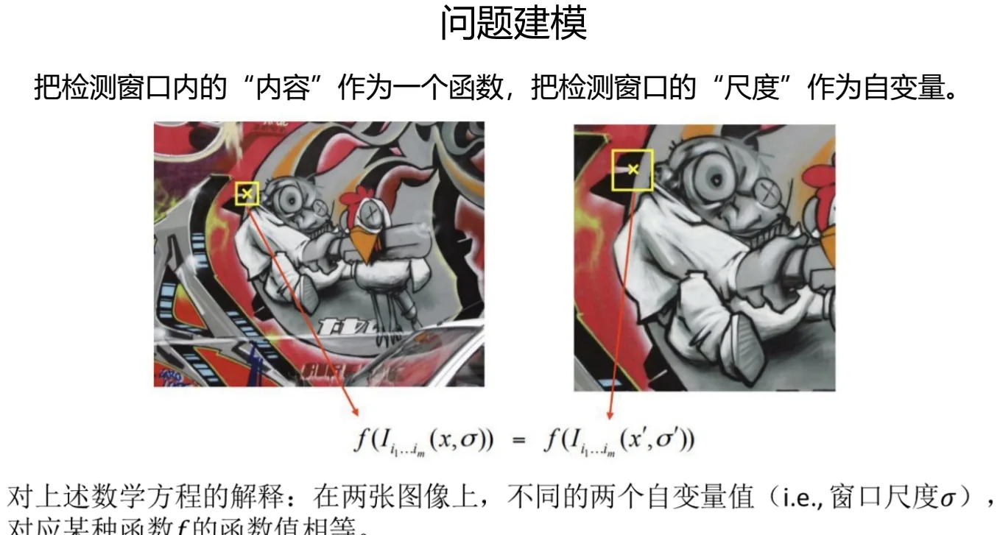
2. 如何量化「内容」：找极值
「内容」是个抽象词，得先能算。课件的回答很直接：让计算机去感知检测窗口中「内容」的极值——也就是说，先选定一种能代表窗口内内容的量，再看它随窗口尺度怎么变，把曲线上的极值点挑出来。至于这个量取什么，课件在讲者备注里给了一个具体的答案：窗口内的平均像素值。它足够简单，又能随窗口大小平滑变化，因此适合用来找极值。
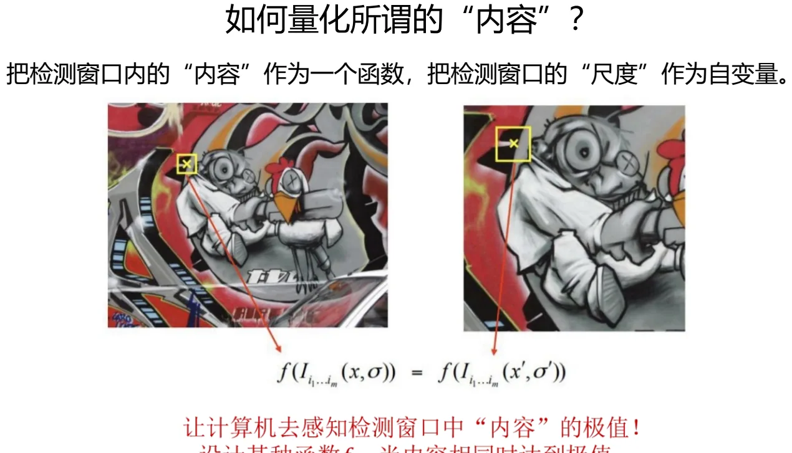
课件用两幅图说明为什么极值能带来尺度不变性：Image 1 与 Image 2 是同一场景、不同尺度的两张图（课件标注 scale = 1/2）。把「内容」f 画成窗口尺度（region size）的函数，会得到两条形状相似、但横向被拉伸／压缩了的曲线；它们各自的极值出现在不同的窗口尺度上，而这个极值所对应的内容量是相同的。于是「在极值处取特征点」这条规则，在两张图上都成立，而且指向的是同一个物理结构。
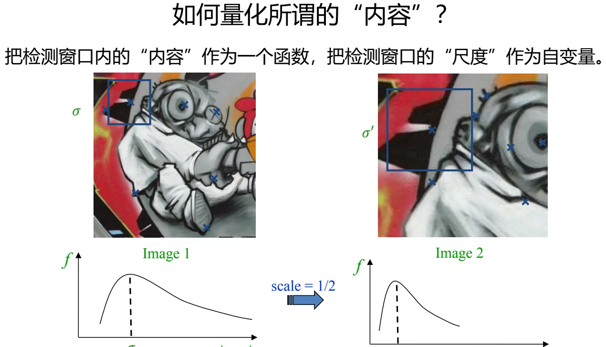
接下来的几页（原课件第 42–47 张）用动画演示了这条「窗口尺度—内容」函数的工作过程：随着窗口尺度从小到大推进，函数值先升后降，极值点处的窗口恰好把这块结构完整地框住——再小则框不全，再大则掺进了周围无关的内容。
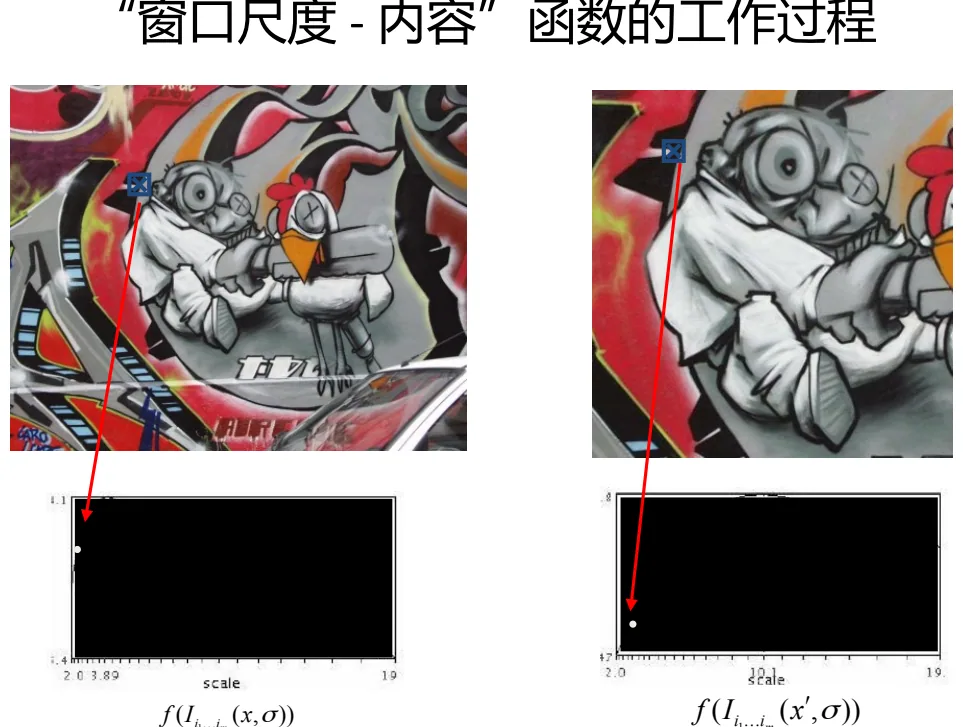
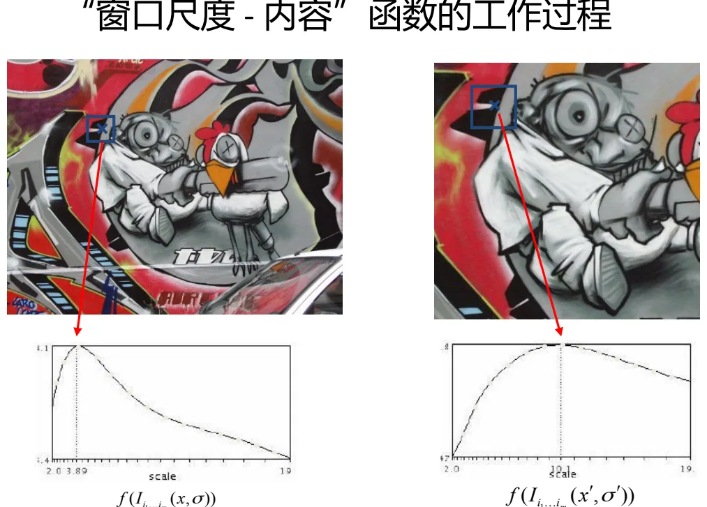
3. 高斯拉普拉斯算子（LoG）
把上面的思想落到一个具体函数上，就是 LoG。课件分三步交代。
第一步，拉普拉斯算子。拉普拉斯算子是对图像进行二阶微分的算子，可以突出图像中强度发生快速变化的区域，通过求取二阶导数的零交叉点来进行图像边缘检测：
∇²f(x, y) = ∂²f(x, y)/∂x² + ∂²f(x, y)/∂y²
第二步，先平滑再微分。由于微分对噪声比较敏感，可以先对图像进行高斯平滑滤波，再使用拉普拉斯算子做二阶微分，以降低噪声的影响。常用的二维高斯函数是：
Gσ(x, y) = 1/(2πσ²) · exp( −(x² + y²)/(2σ²) )
第三步，交换运算次序，得到 LoG 算子。原图像与高斯核函数卷积后再做拉普拉斯运算，而卷积与拉普拉斯可以交换，于是
∇²[ Gσ(x, y) ∗ I(x, y) ] = [ ∇²Gσ(x, y) ] ∗ I(x, y)
右边方括号里的 ∇²Gσ 就是高斯拉普拉斯算子（LoG 算子），它是一个不依赖图像的、只由 σ 决定的模板——所谓「墨西哥帽」形状的滤波器。
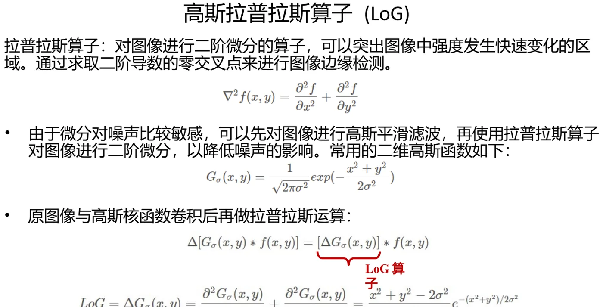
为什么 LoG 能解决尺度问题？关键在参数 σ。课件讲得很直白：
- σ 越大，算子的尺度越大——直观上看，算子在三维空间中形成的那个「洞」的直径就越大，在图像上的检测窗口也就越大；
- 无论图像初始尺寸多大，都可以通过调整 LoG 算子（即调整 σ），使窗口内的「内容」达到极值；在达到极值的尺度下，窗口所框出来的信息量是相同的。
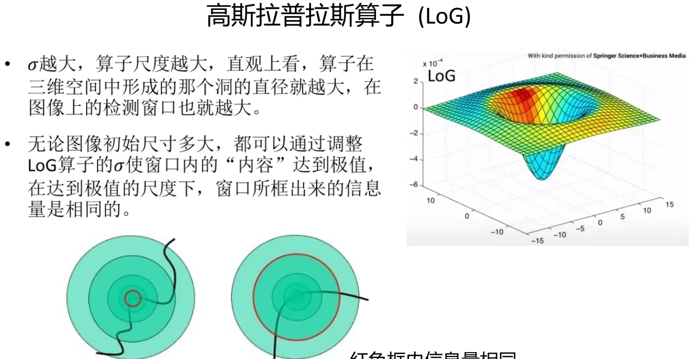
于是 LoG 特征检测的算法流程也顺理成章：
- 计算不同尺度上的尺度归一化 LoG 函数值（即 σ²∇²Gσ 与图像卷积的结果）；
- 同时在位置和尺度构成的三维空间上寻找尺度归一化 LoG 的极值点；
- 进行非极大值抑制，减少重复检测。
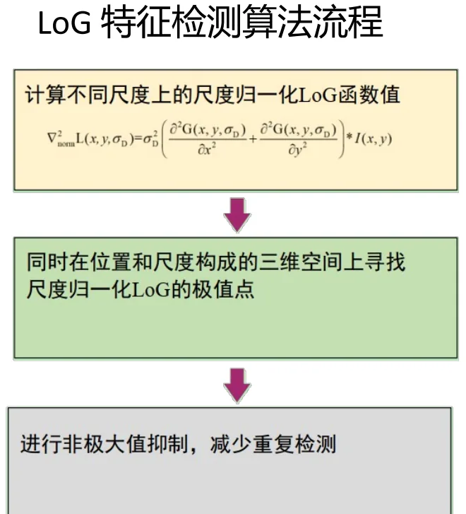
这里要特别留意「位置—尺度」三维空间这个说法：特征点不再只是图像上的一个 (x, y)，而是 (x, y, σ) 三元组——除了在哪儿，还包括「在哪个尺度上看它最显著」。这个三元组就是后面 SIFT 里的 keypoint。
4. 高斯差分算子（DoG）：LoG 的高效替代
LoG 好用但计算贵。DoG 的思路是用两个不同参数的高斯滤波结果相减来近似 LoG。课件给出的定义是：DoG 即高斯函数的差分，具体到图像中，就是将图像在不同参数下的高斯滤波结果相减，得到差分图：
DoG = Gσ1 − Gσ2，即 D(x, y, σ) = [ G(x, y, kσ) − G(x, y, σ) ] ∗ I(x, y)
它与 LoG 的关系可以写成：
G(x, y, kσ) − G(x, y, σ) ≈ (k − 1) · σ²∇²G
也就是说，两个相邻尺度的高斯差分，近似正比于尺度归一化的 LoG。课件的结论是：DoG 相比 LoG 计算更简单，极值点对应的自变量相同，因此常用 DoG 替代 LoG。
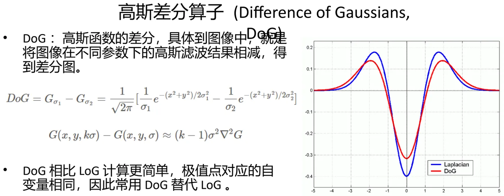
DoG 的检测流程与 LoG 一一对应：
- 将同一图像在三个不同参数下进行高斯滤波；
- 将相邻参数的高斯滤波图两两相减，得到差分图；
- 求中间尺度对应的差分图像的每个像素与该像素同尺度的 8 个相邻点以及上下相邻尺度对应的 9×2 共 26 个点的极值。如果该点像素值为最大值或最小值，就认为该点是图像在该尺度下的一个特征点。
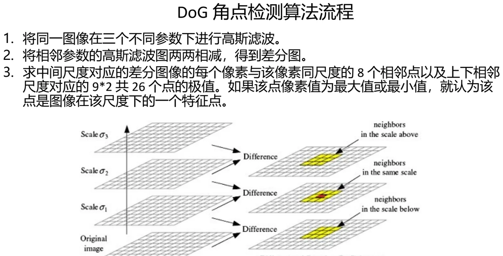
为什么是 26 个点？因为此时比较已经不只发生在二维图像上：一个候选点要和同一尺度的 8 个邻点比，还要和上一层尺度的 9 个点、下一层尺度的 9 个点比，8 + 9 + 9 = 26。这样找到的极值同时在位置和尺度上成立——这正是「尺度不变」四个字的来源。
课件最后给了一篇参考资料（zhuanlan.zhihu.com/p/144875290），想再看一遍 LoG/DoG 推导的可以对照阅读。
本节小结
- 尺度的矛盾：「变」的是图像（检测对象）的尺度，「不变」的是相对区域内的内容；目标是找一个检测窗口的绝对尺度去迎合内容的相对不变。
- 建模方式：把窗口内的「内容」当作函数、把窗口的「尺度」当作自变量，再让计算机去感知这个函数的极值——极值所在的尺度就是该内容的特征尺度。
- LoG：先用高斯 Gσ 平滑再由拉普拉斯算子取二阶微分，且 ∇²[Gσ ∗ I] = [∇²Gσ] ∗ I，方括号内即 LoG 算子。σ 越大算子尺度越大、窗口越大；调整 σ 让窗口内内容取到极值时，不同初始尺寸的图像会框出相同的信息量。
- LoG 检测流程：算不同尺度的尺度归一化 LoG 值 → 在位置—尺度三维空间找极值 → 非极大值抑制。特征点因此是 (x, y, σ) 三元组。
- DoG：D = [G(x,y,kσ) − G(x,y,σ)] ∗ I，且 G(x,y,kσ) − G(x,y,σ) ≈ (k−1)σ²∇²G；计算更简单、极值点对应的自变量相同，所以常用来替代 LoG。
- DoG 流程：三个尺度上高斯滤波 → 相邻两两相减 → 与同尺度 8 邻点及上下尺度各 9 点共 26 个点比较取极值。